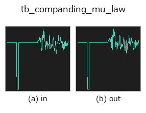

typed op• データ種: signal → signal
• 呼び出し: fullseye.apply(img, "tb_companding_mu_law", a=0.5, b=0.5) (2-D は 1 画像 + 2 スカラつまみ a,b∈[0,1] のモデル)

*図は合成の入力 128×128 で実際に走らせた出力。左が入力、右が出力。点群は上から見た散布(明るさ = z)、1-D 列は折れ線、体積は z 方向の最大値投影、動画は中央フレーム、複素画像は振幅、絵にならない返り値は値そのもの。*
つまみ a を振る(0.1 / 0.5 / 0.9、もう一方は既定):
▸ tb_companding_mu_law: knob a sweep (docs site)
つまみ b を振る(0.1 / 0.5 / 0.9、もう一方は既定):
▸ tb_companding_mu_law: knob b sweep (docs site)
段階(前置きの op → この op。左から順):
▸ tb_companding_mu_law: stages (docs site)
別の画像でも(合成シーン / 写真 / 硬貨。上段が入力、下段がその出力。つまみは既定):
▸ tb_companding_mu_law: other inputs (docs site)
mu-law companding — the G.711 curve, used here on any 1-D signal.
Compress with `F(v) = sign(v) * ln(1 + mu|v|) / ln(1 + mu)` on the signal
scaled to `[-1, 1]`, quantise uniformly, expand back. The steps end up fine
near zero and coarse near full scale, which is the right allocation when the
interesting part of the signal is small compared with its peaks — speech,
vibration, anything with a large crest factor.
This is where mu-law comes from: the image operator
`companding_mu_law` is the same curve applied to intensity. Reporting both
keeps the family honest about which dimension the technique was designed for.
Applicability — it is the crest factor that decides. Measured on a sine
of amplitude *A* with one sample pinned at full scale, so the crest factor is
exactly `1/A` (mean square error relative to a uniform quantiser):
crest 50 4 bit 0.011 6 bit 0.014 (about 90x better)
crest 20 4 bit 0.122 6 bit 0.101
crest 6.7 4 bit 0.613 6 bit 0.616
crest 2.0 4 bit 4.22 6 bit 6.03 (several times WORSE)
So the rule is crest factor above roughly 7 — speech, vibration, impact.
Below that, a plain uniform quantiser wins and mu-law actively hurts.
★Note the peak is a single sample: on random signals of the same family
the advantage swung between 0.55 and 0.87 purely with the seed, because the
largest excursion sets the scale. Measure the crest factor of *your* signal,
do not assume it from the distribution.
Other limits: `mu` near 0 degenerates to uniform quantisation (that is how
you check the curve is doing anything), and the curve is fixed — unlike a
Lloyd-Max codebook fitted to the signal — which is the point when values must
stay comparable across recordings.
Typed bridge of the 1d op `companding_mu_law into the 2-D evolution registry: the same implementation, called under the op(v, a, b) convention. a drives mu (default 255) and b drives bits` (default 8).
• サンプルデータ カタログ(DL URL / ライセンス) — 2-D は skimage.data(BSD/public)+ 合成、3-D は実データ源(Stanford/PDS 等)の DL URL。
• 演算子の来歴・参考文献 — この op 族の元になった研究/手法の出典。
下のプログラムは実際に走ることを確かめてある(図と同じ入力)。Studio のヘルプではこのブロックがボタンになり、その場で読み込んで実行できる。
img_to_signal 0.50 0.50 tb_companding_mu_law 0.50 0.50
▸ Load this pipeline · Load & run
次の例は元の台帳 op companding_mu_law を呼ぶもの。この橋渡し op は同じ実装を fn(v, a, b) 規約に合わせただけなので、挙動はそのまま当てはまる(呼び出し形だけ違う)。
• gallery2d_gray_arith — py -3.11 examples/gallery2d_gray_arith.py
signal を入力に取れる)identity · tb_create_funct_1d_array · tb_smooth_funct_1d_gauss · tb_smooth_funct_1d_mean · tb_derivate_funct_1d · tb_integrate_funct_1d · tb_zero_crossings_funct_1d · tb_abs_funct_1d
typed)tb_points_to_voxel · tb_estimate_point_normals · tb_iss_keypoints · tb_project_points · tb_render_point_depth · tb_statistical_outlier_removal · tb_radius_outlier_removal · tb_voxel_grid_downsample
*Provenance: ops.py — 2D operator registry. この per-op ノートは tools/opdocs.py md が自動生成(手編集しない)。*
© 2026 Kazufumi Furuse — Fullseye operator documentation. Licensed under Apache-2.0.
{kind=link}
{kind=link}
{kind=link}
{kind=link}